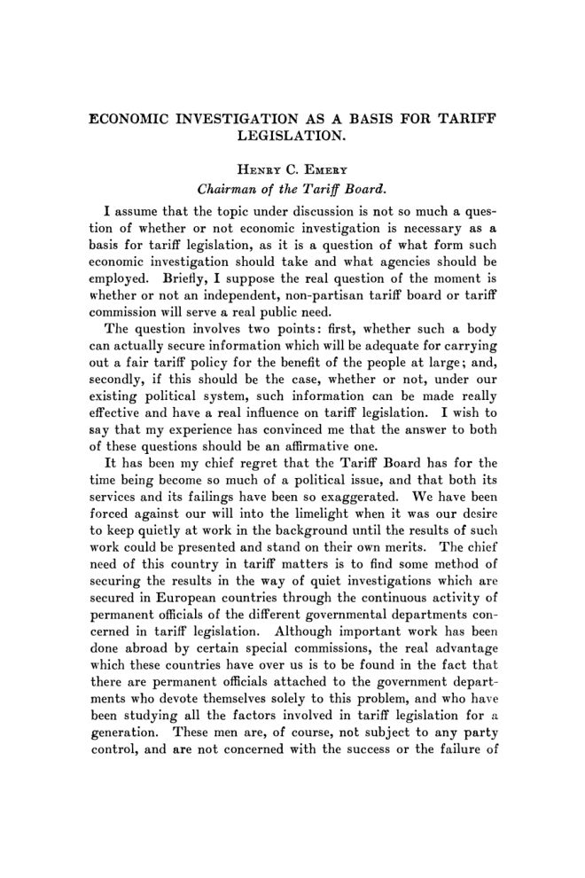

Emery × Willis, 1911: pode a ciência calcular a tarifa?
Leitura: 8 min
O presidente da Tariff Board defendeu que custos de produção podem ser medidos para fixar tarifas. Willis respondeu que a medida não diz o que se quer saber, e Robinson apoiou a comissão por outros motivos.


Henry C. Emery falou em Washington como parte interessada. Presidia a Tariff Board, a junta de especialistas criada pelo presidente Taft, e lamentou que ela tivesse virado questão política, com seus serviços e suas falhas igualmente exagerados. Disse que a junta fora jogada contra a vontade sob os holofotes, quando preferia trabalhar em silêncio até que os resultados falassem por si.
A sessão, no auditório da George Washington University, foi presidida pelo secretário do Tesouro. A pergunta não era se a investigação econômica é necessária para legislar sobre tarifas, mas que forma deveria ter. Emery respondeu que sim a duas questões: um órgão independente pode obter informação adequada, e essa informação pode influenciar a lei.
O que Emery queria copiar da Europa?
Não as comissões especiais, mas os funcionários permanentes. Nos países europeus, diz, servidores dos ministérios estudavam havia uma geração os fatores da legislação tarifária, sem controle partidário. A diferença vinha do regime: no governo de gabinete, cabe ao Executivo redigir os projetos levados ao Parlamento, e esses técnicos influenciam o texto. Nos Estados Unidos, com o governo por comissões legislativas, a solução seria um órgão novo que fornecesse informação imparcial ao Congresso.
O critério em questão era o do partido protecionista: o direito de importação deveria cobrir a diferença entre o custo de produção no país e no exterior. Emery admite que o princípio é fácil de ridicularizar se levado ao extremo, exigindo tarifas diferentes por país de origem ou tarifas enormes sobre café e borracha, que o país não produz. Responde com bom senso prático: basta ajustar a tarifa à concorrência do principal país competidor.
Ele conta que fora cético no início, e que suas declarações da época vinham sendo citadas para provar que o trabalho era ilusório. A experiência o convenceu de que, para a maioria dos manufaturados básicos, a razão entre os custos de dois países pode ser determinada com precisão suficiente. Mais importante do que o custo de fábrica no exterior seria saber a que preço os produtos chegariam ao mercado americano sem tarifa. A junta concluíra duas investigações: papel de imprensa e celulose, e lã e lanifícios.
Por que o livre-cambista deveria apoiar a medição?
Emery dá duas respostas. Se o povo prefere a proteção, até quem a rejeita deveria querer que ela fosse aplicada da forma mais honesta possível, como quem apoia regras de segurança marítima mesmo sem gostar de viagens ao exterior. E nenhum partido americano propunha uma tarifa só para receita no modelo inglês, que tributa apenas o que não se produz no país. O partido que defendia uma tarifa de receita mantinha direitos sobre muitos bens nacionais, com proteção incidental.
Mesmo para fins de receita, argumenta, os dados são necessários: sem estudar preços e custos não se prevê quanto uma mudança de alíquota altera as importações. O exemplo é o Schedule K, da lã. Reduzir pela metade o direito sobre a lã crua poderia até diminuir sua importação, se o direito sobre fios e penteados tornasse mais lucrativo importar o produto semiacabado.
“Todos usamos a mesma tabuada e a mesma régua.” (“We all use the same multiplication table and the same yardstick.”)
A frase é de um membro democrata da junta. Composta por três republicanos e dois democratas, ela fora unânime nas conclusões de fato sobre o Schedule K, embora os membros divergissem sobre a política a adotar.
O que Willis respondeu?
H. Parker Willis declarou de saída que a investigação econômica já mostrara os maus efeitos da proteção e deixou de lado o debate abstrato. Para ele, o que importa saber é o efeito da tarifa sobre os indivíduos, isto é, sobre capital, organização das empresas, salários, recursos monopolizados e consumidores, e sobre a indústria como um todo. Tudo pelo método comparativo, com conclusões provisórias, como lembrara Farnam na véspera.
O alvo era a plataforma republicana de três anos e meio antes, que mandava igualar a tarifa à diferença de custos acrescida de um lucro razoável. Willis vê nela cinco premissas: que custo monetário é custo real, que há concorrência plena, que o custo pode ser apurado, que é uniforme e que os preços dependem dele. Cita Cairnes: salários altos nos Estados Unidos indicariam custo baixo, não alto, porque a indústria produz muito.
Há ainda os valores capitalizados. Se a terra ou a madeira para celulose encareceram porque já havia tarifa, incluir esse custo no cálculo justifica a própria proteção. Willis cita produtores de açúcar de beterraba que pediam tarifa alegando aluguéis altos de terras valorizadas pela tarifa anterior.
Por que o custo não serviria na prática?
Willis lista cinco obstáculos. O Congresso não dera poder para exigir declarações de custo sob juramento, e estrangeiros em geral recusavam acesso aos livros. A contabilidade de custos era pouco desenvolvida. Seria preciso conhecer os custos de todos os países concorrentes. Os custos variam tanto dentro de um país quanto entre países, e proteger o produtor menos eficiente premiaria a ineficiência. E produtos conjuntos e preços de exportação tornam o custo unitário indeterminado.
O caso da lã repete o problema. Os rebanhos produzem lã e carne com o mesmo gasto, e a junta tratou a lã como produto único, descontando as receitas da carne. Willis pergunta o que aconteceria se a meta fosse o custo da carne: um custo dependeria do preço do outro.
Ele aponta ainda que o próprio Taft, na mensagem de 20 de dezembro de 1911, recorrera a preços de mercado. Em 16 tecidos ingleses excluídos pela tarifa, o direito nominal equivaleria a 183%, mas tecidos americanos quase idênticos eram vendidos com acréscimo de apenas 67% sobre o valor estrangeiro. Para Willis, isso era abandonar a doutrina do custo quando chegava um caso concreto.
A conclusão é que a pergunta real é outra: que tarifa garante ao produtor nacional o mercado interno, ou a maior parte dele. Isso é uma questão empírica, de elasticidades de importação e de consumo, e o grau de monopólio a conceder é uma questão política, a ser decidida pelo voto.
Onde Robinson ficou?
E. V. Robinson concordou com Willis na teoria e com Emery na instituição. Como todo comércio internacional se baseia em diferenças de custos comparativos, uma tarifa igual a essas diferenças, se pudesse ser calculada, proibiria todo comércio. Mesmo assim, defendeu uma comissão permanente com poderes e recursos: ela poderia reclassificar as tarifas, mostrar o equivalente ad valorem dos direitos específicos, comparar custos e preços e conter a troca de votos no Congresso. O relatório sobre papel, notou, já revelara uma variação inesperada de eficiência entre fábricas.
Na minha leitura
Na minha leitura, os três concordam mais do que parece. Emery e Robinson defendem a mesma instituição; Willis e Robinson rejeitam o mesmo critério. A divergência real está em saber se a medida imparcial de um número mal definido ainda é útil. Emery responde que sim, porque disciplina o debate; Willis responde que não, porque dá aparência técnica a uma decisão de proteção.
O ponto de Willis que mais interessa ao método é o da dispersão. Se o custo varia mais entre fábricas do mesmo país do que entre países, não existe a diferença de custo do país, mas uma distribuição, e escolher o ponto dela é escolher quem será protegido. É o mesmo problema de qualquer regulação baseada em custo: a média esconde a decisão.
Glossário
- Tariff Board
- junta de especialistas criada por Taft para investigar custos e condições da indústria para fins tarifários.
- Tarifa máxima e mínima
- sistema da lei de 1909 que aplicava alíquotas mínimas aos países que não discriminassem os Estados Unidos.
- Custos comparativos
- doutrina clássica segundo a qual o comércio internacional decorre de diferenças relativas de custo entre países.
- Produtos conjuntos
- bens obtidos do mesmo processo e do mesmo gasto, como lã e carne de um rebanho, cujo custo individual não se separa.
- Ad valorem
- direito calculado como porcentagem do valor, em oposição ao direito específico, cobrado por unidade física.
- Log-rolling
- troca de apoio entre parlamentares, cada um votando pelos interesses do outro.
Fontes
- Economic Investigation as a Basis for Tariff Legislation; Tariff Legislation--Discussion — Henry C. Emery (presidente da Tariff Board) e H. Parker Willis (George Washington University); debatedor E. V. Robinson (University of Minnesota) (pp. 19–41). JSTOR · Internet Archive (PDF)
- Edição completa, com os demais artigos: Nº 118 do Arquivo.
Documento em domínio público (EUA, publicado antes de 1931), via JSTOR Early Journal Content e Internet Archive. Resumo e comentário do autor deste site, sem afiliação com a American Economic Association. Encontrou um erro? Escreva: a correção é publicada no próprio texto, com data.
← Farnam, 1911: a história como laboratório do economista ↑ Nº 118 · Washington, 1911: tarifa medida, orçamento federal e a história como teste